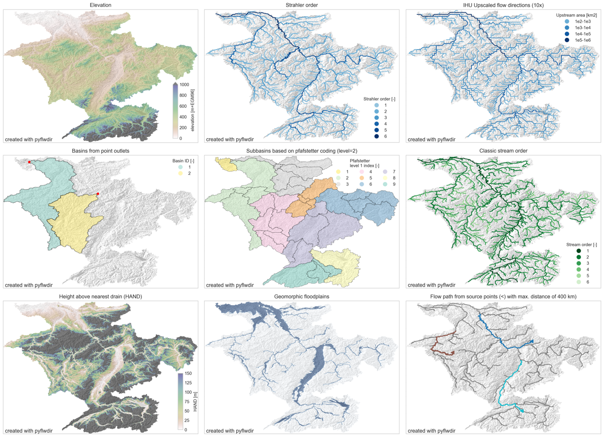

PyFlwdir: Fast methods to work with hydro- and topography data in pure Python.
Intro
PyFlwDir contains a series of methods to work with gridded DEM and flow direction datasets, which are key to many workflows in many earth siences. Pyflwdir supports several flow direction data conventions and can easily be extended to include more. The package contains some unique methods such as Iterative Hydrography Upscaling (IHU) method to upscale flow directions from high resolution data to coarser model resolution.
Pyflwdir is in pure python and powered by numba to keep it fast.
Featured methods
{kind=link}
flow directions from elevation data using a steepest gradient algorithm
strahler stream order
flow direction upscaling
(sub)basin delineation
pfafstetter subbasins delineation
classic stream order
height above nearest drainage (HAND)
geomorphic floodplain delineation
up- and downstream tracing and arithmetics
hydrologically adjusting elevation
upstream accumulation
vectorizing streams
many more!
Getting Started
User Guide
Reference Guide
Developer Guide